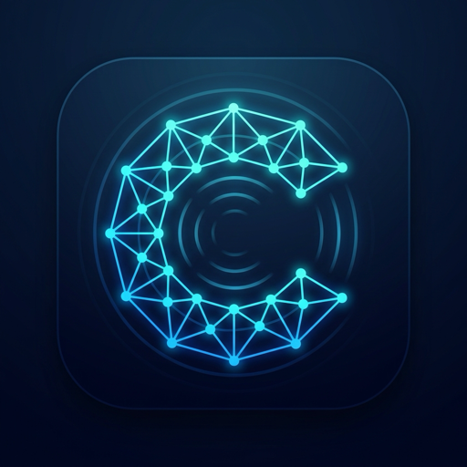
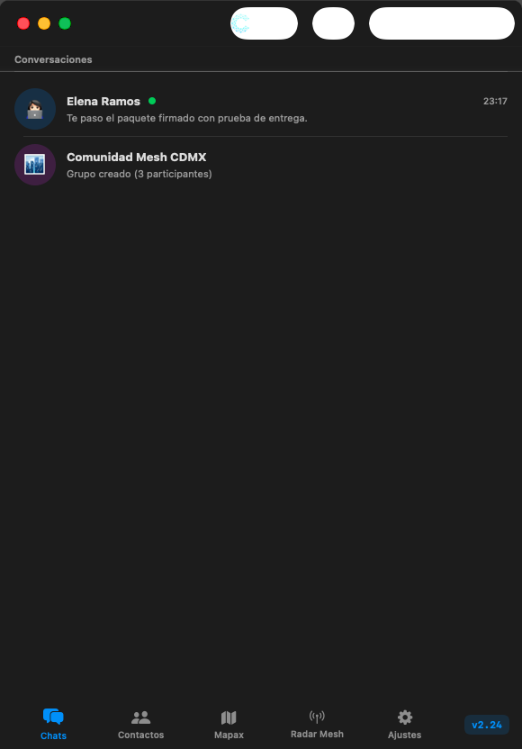

Chax
Rápido online.
Imparable mesh.
Tu app de mensajería para todos los días: Walkie-Talkie Push-To-Talk, mapas satelitales Mapax y grupos sin servidores. Vuela por Internet con Nostr y, cuando se corta la señal o estás en un concierto masivo, continúa chateando por Bluetooth Mesh sin antenas.

Mapax: Cartografía Satelital & Radar Mesh
Mapas de satélite y relieve en alta resolución guardados en tu memoria local sin consumir datos. El radar de proximidad calcula el rumbo en grados magnéticos y la distancia exacta en metros hacia tus amigos cercanos.
Walkie-Talkie PTT & Cero Números
Presiona para hablar y suelta para enviar notas de voz al instante de antena a antena. Transcripción inteligente local en el dispositivo. Cero servidores intermediarios, cero números telefónicos y claves X25519 generadas en tu Enclave Seguro de Apple.


¿Cómo viaja un mensaje sin señal?
Propagación en abanico multi-salto con cifrado sellado: nadie en el camino puede leer el contenido ni saber el remitente original.
Emisión Inicial
Tu iPhone cifra el paquete con la llave del destinatario y emite por BLE en un radio de 100 metros.
Primer Salto (x2)
Dos teléfonos cercanos capturan el paquete, verifican que no sea repetido y restan 1 al TTL.
Expansión (x4)
Cuatro nodos rebotan en abanico cubriendo kilómetros sin tocar una sola torre celular.
Entrega o Puente
Llega a destino, o el primer teléfono con señal lo sube automáticamente a relés Nostr globales.
Momentos donde ninguna otra app funciona
Festivales y Conciertos
60,000 personas saturando las antenas 5G. Chax vuela porque cada persona es un repetidor adicional de la malla.
Montaña & Senderismo
Sin torres celulares a kilómetros. Mapas topográficos offline y Walkie-Talkie para todo tu grupo de expedición.
Catástrofes & Apagones
Cuando un huracán o sismo derriba el tendido eléctrico, la comunidad levanta un enjambre de emergencia de mano en mano.
Chax frente a los mensajeros tradicionales
| Capacidad Fundamental | CHAX | Telegram | Signal | |
|---|---|---|---|---|
| ¿Funciona sin conexión a Internet? | ✓ SÍ (Bluetooth Mesh) | ✕ Muere | ✕ Muere | ✕ Muere |
| ¿Exige número de teléfono obligatorio? | ✓ NUNCA (Identidad P2P) | ✕ Obligatorio | ✕ Obligatorio | ✕ Obligatorio |
| Cartografía Táctica Offline (Mapax) | ✓ Satelital integrado | ✕ Inexistente | ✕ Inexistente | ✕ Inexistente |
| Walkie-Talkie Push-To-Talk Offline | ✓ Directo por radio BLE | ✕ Requiere nube | ✕ Requiere nube | ✕ Requiere nube |
Mejor tenerla instalada antes.
Sin señal no hay cómo descargarla.
Chax es 100% nativa para iPhone, iPad y Mac. Casi no ocupa espacio y duerme en reposo profundo. Descárgala hoy gratis para tenerla lista cuando realmente la necesites.
